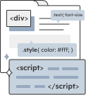

嗨! 我是 Eira 曾宇彤，
一位 UI/UX 設計師
在 UI/UX 相關領域擁有兩年以上經驗，
設計思維與前端語言的相互融合。



CAYIN Index Page Redesign
設計改良-鎧應科技官網首頁
此項專案是將舊有的鎧應科技首頁進行再設計，同時建立完整的設計系統。
CAYIN Website's Menu Redesign
設計改良-鎧應官網選單
此項專案是將舊有的選單進行資訊架構、以及視覺上的再設計。
Side Project
Mood Wave
Mood Wave 是一個心情紀錄App，讓你輕鬆使用貼圖、照片來記錄日常生活，並附有Ai模板與心情排行功能。只需要微小的時間，就能掌握心情變化，擁有更健康的生活!
CAYIN SMP Players
設計改良-產品介紹頁面
此項專案是將舊有的頁面進行設計優化，重新進行區域編排、圖像設計，並大量加入原先缺乏的動態及使用者互動效果，進而改善使用體驗並強化產品功能特色。
Personal Project
設計改良-烘焙坊網站設計
此項專案為個人作品，是將我在大學時期製作的烘培坊網站進行重新設計，在設計方向上重新調整，希望呈現富有溫度及質感的印象。
CAYIN Products
產品介紹頁面
此頁面介紹多個產品介紹頁面，包含編輯廣告影像、以及管理系統之軟體...等。